О прокторинге
План урока
- Независимый тестовый контроль
- Прокторинг ITMOproctor
- Прокторинг examus.net
- Досрочная сдача
- Проверка знаний 😉
Судный час Итоговое тестирование. Время проверить полученные знания. Есть два пути для этого: независимый тестовый контроль (НТК) и прокторинг. Расскажем подробнее про каждый.
Независимый тестовый контроль
Итак, основные моменты сдачи НТК:
- Он проводится на платформе exam2.urfu.ru
- О времени проведения будут известно заранее
- Предстоящие экзамены будут отображаться в окошке «Навигация» в списке «Мои курсы» либо в списке «Расписание зимней/летней сессии», где в поиске необходимо указать свою академическую группу
- С тебя требуется только лишь доступ к камере, с помощью которой каждые 30 секунд делается фотография тебя, делающего задания
- Перед началом проверь работоспособность своей камеры
- Подготовь рабочее место: твоё лицо должно быть хорошо освещено, в поле зрения камеры нет посторонних людей
- Сфотографируй документ, удостоверяющий личность (паспорт либо студенческий билет) и убедись, что данные возможно прочитать
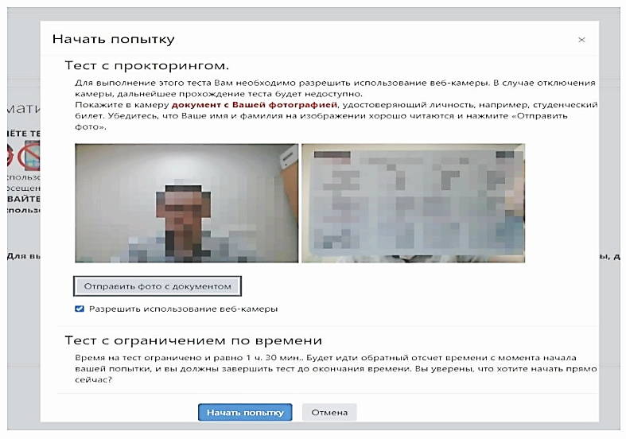
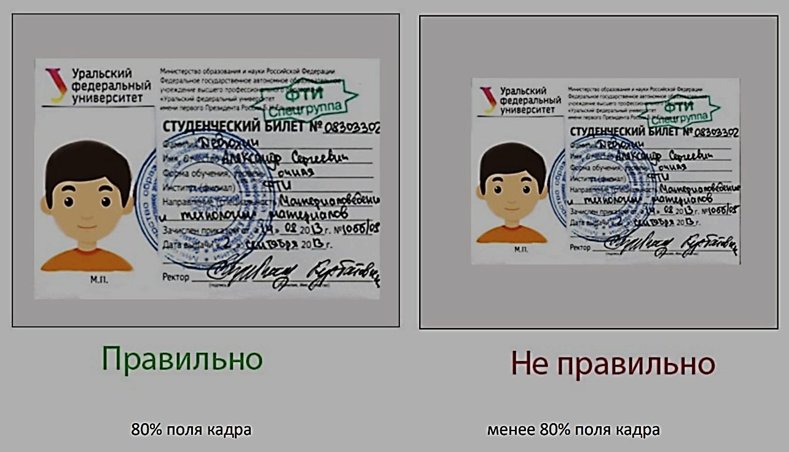
- Если при сдаче разрешён черновик, то в начале необходимо показать его с двух сторон (это должен быть чистый лист)
- Сразу после выполнения экзамена будет известно количество полученных баллов
- Проверка может занять от одного дня до несколько недель
- В случае успешного выполнения в графе «Экзамен/Зачёт» в списке предметов БРС отобразится полученный результат
- Если по каким-либо причинам экзамен не будет зачтён, то в графе отобразится «1.0 из 100» и на почту придёт письмо с причиной твоей не сдачи.
Прокторинг ITMOproctor
Основные моменты сдачи прокторинга с использованием приложения ITMOproctor:
- Приложение ITMOproctor необходимо заранее установить на свой ПК
- Войди через аккаунт «Открытого образования»
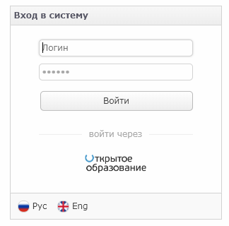
- Настрой систему (веб-камера, микрофон, демонстрация экрана) и проверь связь. Сделать это можно через соответствующие пункты во вкладке «Меню»
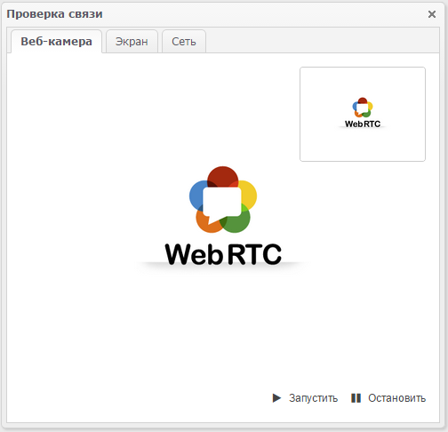
- Запишись на экзамен. В центральной части окна отображаются экзамены, а справа – их статус. *будет фото* Нажми ниже кнопку «Запланировать» и выбери удобное время. После этого статус изменится на «Запланирован»
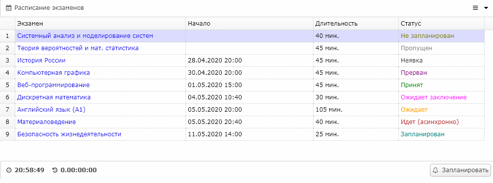
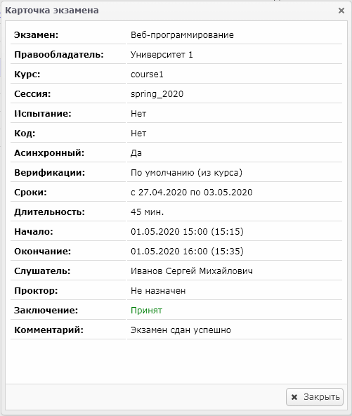
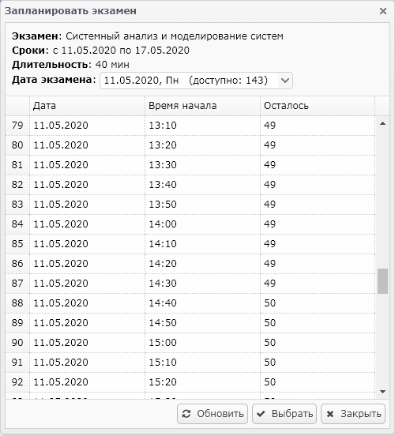
- Обрати внимание, что при попытке записаться на тестирование в последние дни сдачи и нехватки слота под сдачу, промежуточная аттестация считается не сданной по вине студента и будет рассматриваться как неявка
- Пропуск назначенного тестирования считается неявкой вне зависимости от причины
- Советуем так же читать руководство самого курса
- В выбранное время подключись и дай доступ к камере, микрофону и демонстрации экрана – всё это будет фиксироваться
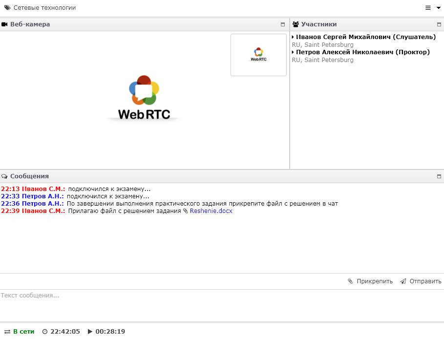
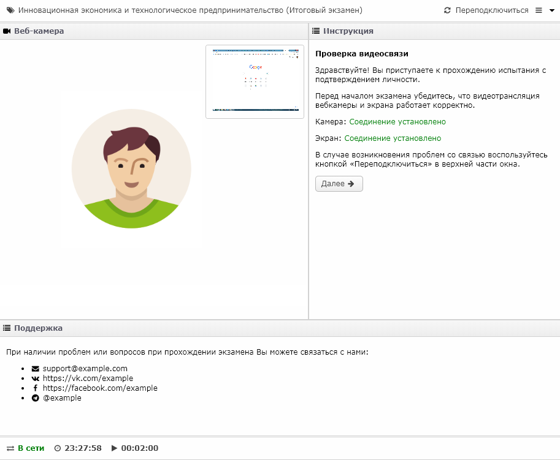
- Прокторинг может быть двух видов: синхронный (с проктором/наблюдающем) и асинхронный
- Если прокторинг асинхронный, то после установления соединения по нажатию кнопки "Далее" осуществляется переход к шагу получения кода экзамена. Для получения кода необходимо перейди на платформу онлайн-обучения, выбери курс и экзамен, соответствующие экзамену, и подтверди готовность к прохождению экзамена в режиме идентификации личности. После перехода по ссылке на сайте платформы ты увидишь уникальный код экзамена. После этого необходимо переключиться в интерфейс приложения ITMOproctor, код автоматически отобразится в соответствующем поле. Если этого не произошло, необходимо скопировать код со страницы экзамена в платформе и вставить его в соответствующее поле в системе прокторинга.
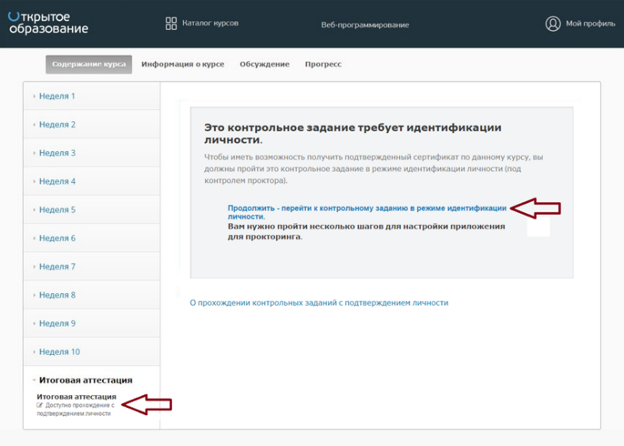

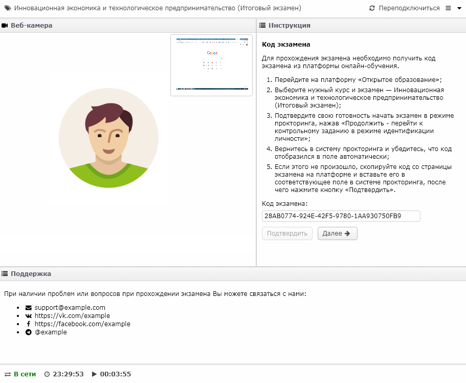
- Покажи комнату и стол. Будь внимательны – вокруг не должны находиться люди, источники информации, средства связи
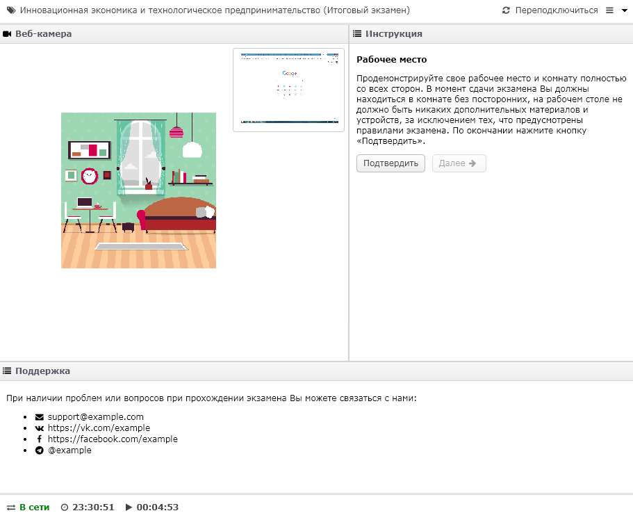
- Покажи в камеру документ, удостоверяющий личность (паспорт либо студенческий билет)
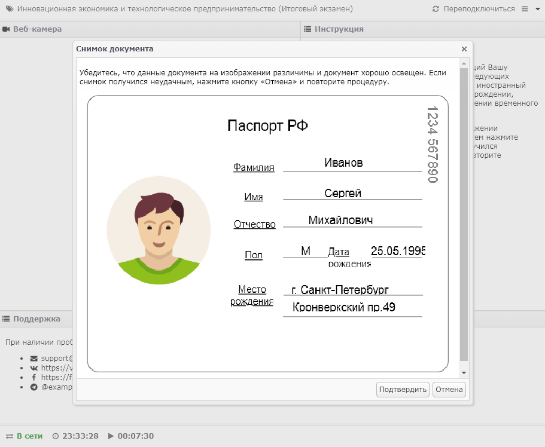
- Тебе сообщат информацию о том, какие источники можно использовать
- Результат будет известен сразу после выполнения
- Если прокторинг был синхронным, то наблюдающий сразу сообщит об успешности выполнения экзамена
- Если асинхронным – информация появится позже, следи за статусом экзамена на главной панели
Прокторинг examus.net
Основные моменты сдачи прокторинга с использованием расширения examus.net:
- Скачай расширение для браузера examus, используй Google Chrome
- Войди через аккаунт платформы «Открытое образование»
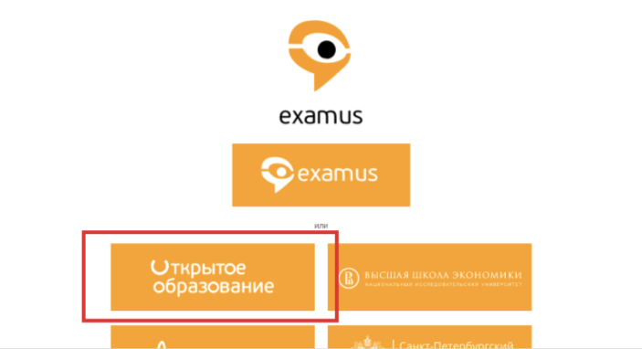
- Заранее проведи проверку связи и оборудования
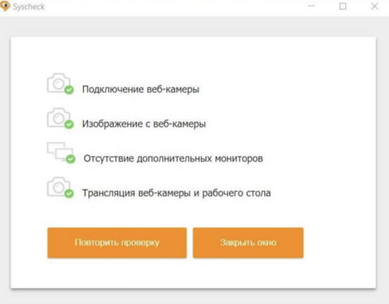
- Запишись на экзамен: нажми на кнопку «Календарь», выбери экзамен и выбери свободный слот
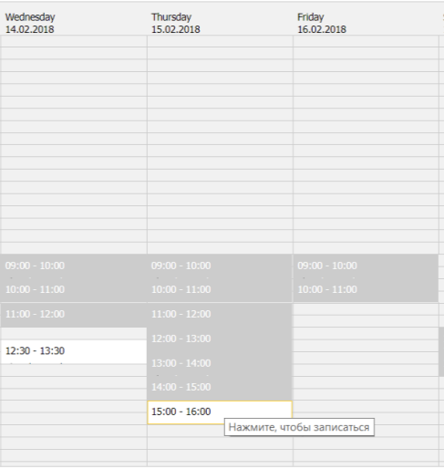
- Запись на экзамены проводится не менее, чем за 48 часов до начала
- Время экзамена указано в часовом поясе г. Москва (UTC+3)
- Когда подойдёт время экзамена, нажми на кнопку «Начать»
- Прочти порядок прохождения тестирования, требования к пользователю, технические требования к оборудованию, подтвердите свое согласие с правилами проведения онлайн тестирования и нажми кнопку «Продолжить»
- Пройди процесс проверки настроек устройства
- В новом окне внимательно ознакомься с предложенными рекомендациями и выполни их. Затем в выпадающем списке выбери прокторинговую систему Examus и нажми «Продолжить»
- Поднеси к камере документ, нажми кнопку «Сфотографировать», и затем «Отправить»
- После отправки документа жди указаний проктора, которые появляются в чате с правой стороны экрана
- Когда проктор разрешит начать тестирование, произойдет обновление страницы и станет доступен сайт «Открытого образования» и кнопка «Начать тестирование»
- После выполнения нажми на «Завершить сдачу экзамена»
Досрочная сдача
Некоторые курсы можно сдать досрочно. О наличии такой возможности всегда сообщают в группе ВКонтакте вашего курса. Для этого:
- Нужно иметь выполненный курс на 100%
- Заполнить заявку и ждать одобрения своей заявки
Есть плюсы: меньше нагрузки и стресса во время сессии, а также дополнительная попытка в случае неудачи на предварительном экзамене. Из минусов – не будет информации о том, какие задания будут в тесте.